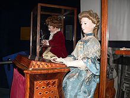

La pianista es el autómata que está programado para tocar el órgano, está hecha con 2000 piezas, puede tocar
cinco piezas musicales con un órgano, pero lo curioso de este autómata es que las melodías que toca no salen de
una caja musical, estas son tocadas verdaderamente por el autómata con el movimiento que tiene en sus dedos.
Cuando el autómata termina de tocar una pista, este saludará a su público, el autómata también puede seguir las
notas que toca con la mirada, así mismo puede mover el cuerpo al ritmo de la música y simular la respiración con
el subir y bajar de su torso.
